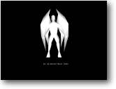

4. Animação de Objetos Objetivo: Animar um objeto |
 |
Até
agora nós só usamos objetos estáticos. É hora de
dar vida a nosso mundo e pensar em animação. O Blitz3D carregará
malhas animadas de uma variedade de formatos, inclusive .X (DirectX), .MD2 (usado
pela engine do Quake 2) e ultimamente .3DS (3D Studio).
Como você exibe e anima um objeto? Embora o B3D tenha alguns comandos
para construir formas como o cubo e esfera, realmente nós precisamos
usar um modelador 3D para criar nosso objeto.
A maioria dos programas vão exportar/importar quase todo formato que
você possa precisar, pessoalmente eu gosto de trabalhar com o formato
Directx (X). O modelador que você escolhe usar depende de sua preferência.
Truespace (www.caligari.com),
Rhino 3D (www.rhino3d.com)
e Canvas 3D (www.amegia.com) - todos suportam
o formato X sem problemas. Outros modeladores podem suportar com o uso de plugins.
Recentemente eu tenho usado o modelador AC3D para minhas necessidades, uma vez
que ele é simples e poderoso. Você pode baixar uma versão
trial completamente funcional no website oficial (www.comp.lancs.ac.uk/computing/users/andy/ac3d.html),
mas projetar um objeto que realmente tenha movimento realístico é
uma arte. A maioria de nós (inclusive eu) vai achar isto uma luta. Por
sorte lugares como 3dcafe (www.3dcafe.com)
e Polycount (www.ploycount.com) contém
centenas de modelos grátis prontos para serem usados.
Hora do código-fonte:
| Graphics3D 800,600 SetBuffer BackBuffer() camera=CreateCamera() CameraViewport camera,0,0,800,600 light=CreateLight() man=LoadMD2( "gargoyle.md2" ) PositionEntity man,0,-35,600 RotateEntity man,0,180,0 AnimateMD2 man,1,.1,32,46 While Not KeyHit(1) If dist<970 MoveEntity man,0,0,.5 If dist=970 AnimateMD2 man,1,.05,0,31 dist=dist+1 UpdateWorld RenderWorld Text 320,500,"Demo: Um MD2 Animado" Flip Wend End |
Então, o que está acontecendo?
| man=LoadMD2( "gargoyle.md2"
) PositionEntity man,0,-35,600 RotateEntity man,0,-90,0 |
Aqui eu usei o comando LoadMD2 para carregar um objeto MD2
animado com a variável 'man'. Modelos MD2 podem ser achados quase em
qualquer lugar na rede, uma vez que eles são o foco principal do Quake
2. Existem centenas de objetos prontos e com animação para serem
incluídos em sua epopéia. (Embora tenha o cuidado de ler qualquer
mensagem de direitos autorais que pode estar incluída a eles).
A menos que você planeje usar MD2 todo o tempo, eu espero que você
estará usando o comando LoadAnimMesh que faz a mesma coisa que a instrução
LoadMD2 (mas permite carregar animações X e 3DS)
Nós não entraremos em quaisquer detalhes que envolvem criar animações
em um modelador, mas se você estiver interessado eu estou seguro que qualquer
produto você use conterá algum tipo de tutorial para criar animações.
(Você deverá achar alguns tutorials sobre modelagem 3D em meu website
em breve)
Os quadros de animação (keyframes) são carregados junto
com o modelo, tudo o que nós temos que fazer é dizer ao B3D onde
começar - e onde terminar! Antes de olharmos isto em ação,
você notará que eu posicionei e girei o objeto para um novo ponto
de partida. Originalmente o personagem foi projetado voltado para a direita,
assim nós precisamos girá-lo 90 graus - para que ele fique voltado
para nós. (Eu fiz isto usando o comando RotateEntity)
| AnimateMD2 man,1,.1,32,46 |
Esta instrução informa ao B3D que nós
queremos que o objeto 'man' seja animado repetidamente (assim os quadros do
movimento de caminhada se reiniciam), a uma velocidade de .1, começando
pelo quadro 32 e terminando no quadro 46
Quando nós definimos o comando, a animação correrá
por si só sem termos que fazer qualquer coisa a mais.
Se nós estivéssemos usando um objeto animado regular (X ou 3DS)
nós usaríamos a instrução Animate, que trabalha
precisamente como o AnimateMD2 que eu usei aqui neste exemplo.
Como você pode ver olhando o código, eu defini um loop que continua
movendo o objeto para frente até que o contador seja igual a 970. (usando
o comando MoveEntity)
Depois disso a animação é reajustada para exibir a animação
de posição parada (frames 0-31). Por que não alterar o
programa para incluir rotação, de forma que o personagem possa
se movimentar livremente?
Embora eu tenha definido a animação para fazer repetições,
nós podemos, é claro, fazer a animação correr apenas
uma vez se quiséssemos. Para fazer isso basta você mudar o parâmetro
MODO na instrução Animate. Aqui é a instrução
por completo:
| Animate [nome da entidade], [modo 0,1,2 ou 3], [velocidade], [sequência], [transição] |
No caso de MD2 você usaria a instrução:
| AnimateMD2 [nome de entidade], [modo 0, 1, 2 ou 3], [velocidade], [quadro inicial], [quadro final],[transição] |
No caso de você estar interessado, aqui é um informe de todos os modos de animação que nós podemos usar: (Se lembre nós usamos o modo de repetir a animação)
| 0: Parar a animação
1: Repetir a animação 2: Animação vai-e-volta 3: Animar apenas uma vez |
NOTA: Para animar de maneira reversa basta usar um valor de
velocidade negativo
Felizmente o B3D faz animações muito facilmente. Realmente é
apenas um caso de montar tudo que nós precisamos na animação
usando os vários parâmetros da instrução antes de
animarmos propriamente o objeto. Porém, para fazer a animação
parecer convincente você precisa pegar o tempo certo. Quantas vezes você
viu em um jogo o personagem parecer deslizar sobre o chão ao invés
de estar caminhando sobre ele?
Mas isso é metade da diversão! Como você verá, um
pequeno esforço realmente pode fazer uma diferença grande.
O B3D contém uma grande quantidade de comandos de animação
que servirão para todo propósito que você possa precisar.
Se aprofundando mais você verá incríveis comandos que entrelaçam
os quadros de animação. Por exemplo, um objeto de um homem correndo
pode mudar suavemente para a animação dele estando parado. Se
você rodar este exemplo algumas vezes e olhar o ponto onde o objeto pára
você notará o salto. Mas, usando estes comandos nós poderíamos
suavizar a mudança de forma que ela não fosse percebida. Embora
eu não use estes comandos neste tutorial, eu posso acrescentar um novo
tutorial sobre o assunto brevemente.
Então, o que está esperando? Vá e crie o próximo
Quake!